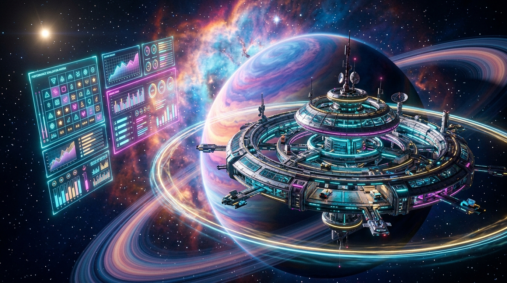

Otonom uzay üssü istemlerini 5 maddelik Rubrik Matrisi ile test et, en güvenli ve tasarruflu şampiyon prototipi seç!
20 bölümün tamamını üstün başarıyla tamamladın! 5 Maddelik Rubrik Matrisi ile yapay zekâ istemlerini test ettin ve en tasarruflu, güvenli otonom uzay üssü prototipini seçtin.
📌 Canlı ders panelindeki ✏️ Cevapla butonuna tıklayın ve bu şifreyi girin!